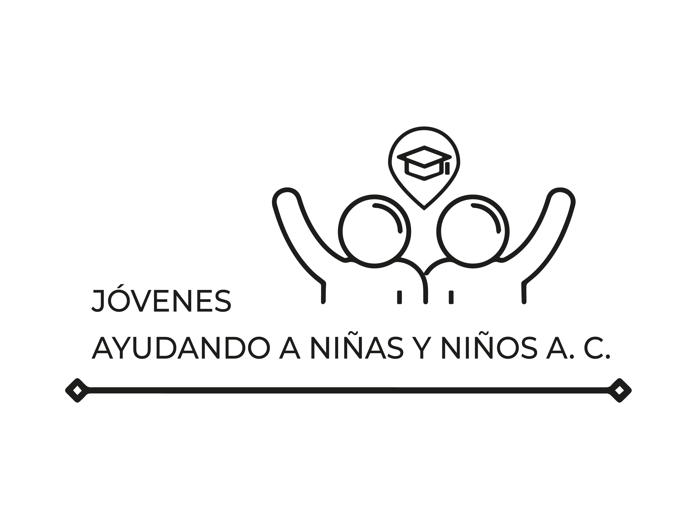

I’m a PhD candidate in Economics at MIT. I study the economics of education, development and some applications of machine learning tools. I run field experiments in education and use machine learning to analyze classroom interactions. Before coming to MIT, I earned an MA in International Education Policy Analysis at Stanford University and a BA in Economics from ITAM in Mexico City. Thanks to this research, I co-founded Jóvenes Ayudando a Niñas y Niños A.C., an NGO that connects volunteer tutors with primary- and middle-school students across Mexico to provide free online tutoring.
TutorUp: What If Your Students Were Simulated? Training Tutors to Address Engagement Challenges in Online Learning
(with Sitong Pan, Robin Schmucker, Bernardo Garcia Bulle Bueno, Fernanda Albo Alarcón, Hangxiao Zhu, Adam Teo, Meng Xia)
Abstract
With the rise of online learning, many novice tutors lack experience engaging students remotely. We introduce TutorUp, a Large Language Model (LLM)-based system that enables novice tutors to practice engagement strategies with simulated students through scenario-based training. Based on a formative study involving two surveys (N1 = 86, N2 = 102) on student engagement challenges, we summarize scenarios that mimic real teaching situations. To enhance immersion and realism, we employ a prompting strategy that simulates dynamic online learning dialogues. TutorUp provides immediate and asynchronous feedback by referencing tutor-students online session dialogues and evidence-based teaching strategies from learning science literature. In a within-subject evaluation (N = 16), participants rated TutorUp significantly higher than a baseline system without simulation capabilities regarding effectiveness and usability. Our findings suggest that TutorUp provides novice tutors with more effective training to learn and apply teaching strategies to address online student engagement challenges.
[Paper]
Expanding Access to Tutoring: A Scalable Platform for Personalized Learning and Data-Driven Research (with Bernardo Garcia Bulle Bueno, Fernanda Albo Alarcón ans Sebastián Guevara)
Abstract
Expanding access to high-quality tutoring is critical for reducing educational disparities, yet scaling effective programs remains a challenge. We developed a platform that automates key logistical aspects of online tutoring, enabling large-scale implementation. Our system includes a real-time monitoring framework that tracks tutor activities. Prior research on online tutoring has shown positive effects on student learning. Building on this, we conducted a randomized controlled trial (RCT) in Mexico. We find that students assigned to tutoring improved their math scores by 0.14 standard deviations. Beyond tutoring delivery, the platform serves as a tool for research. Participating tutors upload class recordings. While this paper focuses on the tutoring intervention, we provide an overview of the platform’s potential to facilitate large-scale RCTs. We also show some basic applications of machine learning tools to our data with the aim to analyze student-tutor interactions at scale, bridging the gap between quantitative and qualitative research in education.
[Accepted in AIED 2025]
Working Papers
Understanding the Mechanisms of Social and Emotional Learning: Recording Analysis (with Fernanda Albo and Bernardo García Bulle Bueno)
Abstract
In progress
Can single-gender Classrooms Counteract Traditional Gender Beliefs? Evidence From a Tutoring RCT (with Bernardo García Bulle Bueno)
Abstract
This paper explores how group composition moderates the negative impact of traditional gender beliefs (TGB) on girls’ learning. While prior research has documented the detrimental effects of gender-biased attitudes, the mechanisms driving these outcomes remain poorly understood. We conducted a randomized controlled trial (RCT) in which students were assigned to either single-gender or mixed-gender tutoring groups, and tutors’ gender beliefs were independently measured. We find that girls placed in mixed-gender groups learned significantly less when their tutor held traditional gender beliefs. In contrast, girls in single-gender groups were not negatively affected by tutors with TGB. These findings suggest that differential treatment of boys and girls may underlie the observed learning gap, and point toward group composition as a key lever for mitigating the effects of gender bias in educational interventions.
Good Vibes in Class: A Tool to Detect Which Emotions Lead to More Learning (with Fernanda Albo, Bernardo García Bulle Bueno and Tobin South)
Abstract
We present a method to characterize the classroom environment through
emotion detection from audio recordings. Using machine learning tools
we build an emotion classifier using MFCC features of labeled voice clips
and apply it to slices of more than 1,500 online class session records. We
find that higher measurements of high-intensity emotions were significantly
correlated with higher Teacher Value Added (TVA) estimates, determined
using Math test scores of students before and after receiving tutoring.
Secondly, we found that attendance metrics in the second class were highly
correlated to the class environment in the first class. Finally, we found
that higher-skilled tutors progressively increased high-intensity emotions
as they had more sessions with their students.
Teaching
Political Economy and Economic Development MIT 14.75:
Teaching Assistant for Professor Esther Duflo and Professor Sara Lowes 2023
Principles of Microeconomics MIT 14.01:
Teaching Assistant for Professor Sarah Ellison and Professor Jonathan Gruber 2022 and 2024
JANN

Jóvenes Ayudando a Niños y Niñas A.C. (JANN) is a nonprofit
organization that aims to tackle Mexico’s learning gap through
free, 100 % online tutoring.
University students sign up to participate as volunteer tutors.
They are assigned a group of students to work with remotely. Group sizes range from 1 – 5 students. Tutors
deliver 2 hours of tutoring per week for 1 to 24 weeks
Beneficiaries: 24 000 + elementary and middle-school students have received classes
Intendere is a know-how plus web-based platform that
helps schools, NGOs, and governments run large-scale
online tutoring programs with a small administrative team.
The system handles:
Tutor training and interviewing
Testing and surveying students
Tutor-student matching
Resolving scheduling conflicts
Monitoring completion of tasks
Automatic reminders to participants
Efficient support
Running internal A/B testing or randomized controlled trials
Automatic generation of documents
Deployments
• Mexico: Intendere's software is based on the software
developed to host JANN. Intendere will be deployed within JANN by 2026.
• Peru (2025): starting in September 2025 rolling out to 1 000 tutors and 5 000
students in underserved communities.
If you are interested in setting up a tutoring program reach out to us:
intendere.app.
Other
If you live in Mexico or any country in Latin America and you are considering applying to a PhD in economics here is a resource a group of us put together:
Aplicar desde México.